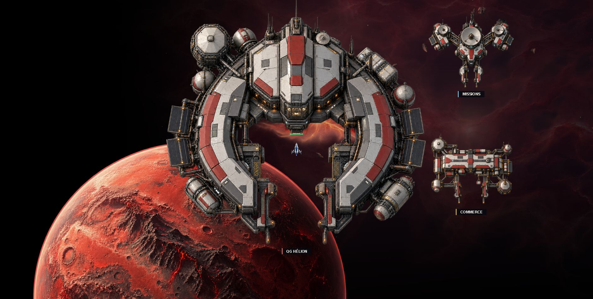

Un QG plus imposant
Le QG passe de 720 à 1 100 unités : environ 53 % plus large. Le commerce et le relais passent de 300 à 360 unités et sont répartis du côté intérieur de la map pour laisser de l’espace au QG.
Aperçu visuel — bâtiments non remplacés dans les parties

Nouvelle proposition : QG de 1 100 unités. Même taille de vaisseau et même zoom que le premier aperçu.
Voir les trois structures en détail et leurs sources